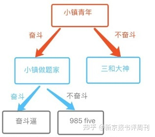

当“小镇做题家”成为连接者
作者：余胧 - 新京报书评周刊
在《拉扯大的孩子》一书中，安超以自己的家族为田野，通过口述史和民族志的方法追溯了民间养育在过去百余年间的变迁。她的一个重要发现是，支撑平民子弟实现社会流动和文化超越的，并非“读书改变命运”的功利渴望，而是民间社会在长期历史发展中所沉淀下来的、超越时代差异的文化品性。对于现代教育焦虑来说，这些朴素的文化品性亦是一种解毒剂。
在某种程度上，安超的故事很符合人们对于“小镇做题家”的想象。安超出生在山东的一座小城。1998年企事业单位改革时，母亲下岗摆起了服装摊，安超就缩在摊子的一角温习功课。她从这个角落出发，一步步迈向大学的校门，又一路被保送到北大读硕士。22岁那一年，她揣着两百块钱，茫然四顾地来到了“居不易”的北京，又从一个怯生生的小女孩成长为独立的职业女性，终于实现了父母对她的期待——有一份“风不着、雨不着”的体制内工作。对于很多底层子弟来说，故事就可以在这里打住了。
然而，故事的B面是，在北大的课堂上，她接触到教育社会学，对性别、阶层和公平有了更多的理解，也产生了更多学术探索的渴望。也许是儿时在高山和旷野中奔跑的经历赋予了她自由探索的勇气，她不顾父母和师友的反对，辞去了大学教务员工作，重返校园读博士。作为一个博士妈妈，她一边抚育幼小的孩子，一边在学业与家庭的冲突中挣扎。就在这种“母职拉扯”中，“拉扯大的孩子”这个主题诞生了。“拉扯孩子”对个体、对家庭、对社会到底意味着什么？她切身地体会到，那些隐藏在家庭之内的、有关儿童吃喝拉撒的琐事并不完全是孤立封闭的私人行为，而是连接着个人、社会和历史。
研究民间养育，为何要诉诸历史？
新京报：在对民间养育的研究中，我们为什么需要历史的维度？
安超：我在书里提到涂尔干的一段话。他说现代人只是将自己与前辈分离开，而对与传统的共同之处比较茫然。这种态度会使我们被当下的种种激情和欲望所蒙蔽，而看不清真正根本和迫切的需求。摆脱这种狭隘的唯一办法就是借助历史。它能够帮助我们看到在人类长期发展的过程中所沉淀下来的、重要的东西。
如果只是从现代教育焦虑的角度来看待民间养育学的话，你会觉得乡村教育没什么重要性。现在谁还讲乡村教育，在城市化过程中，传统村落逐渐解体了、空心化了、乡村文化也式微了，遑论乡村教育？但从历史的维度来看，我们会发现人的成长始终存在一些共通性的规律，会发现民间养育在历史发展中形成了一些超越时代差异性和短期功利算计的文化品性。
在这个层面上，我们尤其需要诉诸历史，对当前的教育抛出追问：我们对于教育形成了哪些共识或冲突性观念？这些共识或冲突性观念是促进了儿童和历史的发展，还是一种倒退？有哪些被保留下来了，哪些出现了断裂？这些传统是否有延续的价值？换句话说，只有重新审视民间教育的历史演进，才能明白我们今天的“育儿焦虑”从何而来。
新京报：这些文化品性具体指什么？
安超：第一个是底线性的教养。这种“教养”是平民社会对于儿童性格、品质的底线性要求，包括“不劳作者不得食”的参加劳动的本分、吃饭的礼仪、待人接物的规矩、不“眼馋”别人东西等等。比如，父母会从节制口舌之欲开始培养孩子的意志，老百姓也经常会从吃饭的礼仪来判断一个孩子能不能成才。
除了这种基于生计和实用的底线性的教养，民间养育还有一种对于读书、自然和天道等神圣之物的敬畏。科举是寒门贵子“学而优则仕”的必经之路，这也常被精英学者用来批判底层老百姓对读书的“功利”态度。但在传统社会，能读书的平民子女很少，依靠读书改变命运的人更少。人们更多的是顺应天命、顺其自然，很少会奢望子女通过读书实现大富大贵，更多是将读书作为一种“天道”来尊重和敬畏。
在农村，人们也常常会说“老天爷看着呢”，“举头三尺有神明”，这是一种对自然和社会法则的“臣服”。人们能够洞察到这种超越阶层、超越年龄的普遍性文化特质并心生敬畏，相应地产生道德自律。
底线性的教养和神圣性的敬畏不只靠个人的天性和领悟，还要靠实践参与、集体生活和周期性的仪式来保证。不管是田间的游戏、邻里的闲谈，还是集市和庙会，这些日常的公共闲暇活动帮助人们建立起情感的联结，形成对道德法则的敬畏，并获得与他人和世界的共鸣。
新京报：你刚刚提到乡村教育，它和民间养育之间是怎样的关系？
安超：在传统的乡土社会，乡村教育曾经是民间养育的主流。它很重要的一个部分就是生计教育。在乡土社会，每个儿童都是天然的劳动力，生下来就见识了一切劳作的过程。每个穷人家的孩子早早地就能独当一面，而且将劳作作为一种生命的基本品质。但今天的民间养育中已经没有生计教育了。在城市里长大的孩子看不到父母们的生计，儿童的世界在很大程度上被成人纯粹化和童话化了。
乡村教育的第二个重要的部分是自然教育。自然能够让人存有野性。在乡村，孩子“野”意味着“能自己玩了，不用大人操心”和“能跑能闯”，也意味着身体的健康。这种“野”是乡土世界的生命力量。然而，在石头森林的城市中，孩子已经见不到自然纯粹的那一面，也体会不到自然对心灵安顿和成长的价值了。
还有一个仪式性的生死教育。在乡村中，生老病死是一件很自然的事情。村里人下葬时，孩子会跟在队伍后面看热闹，他们对死亡懵懵懂懂，但并不恐惧，生老病死的观念被内化为一种落叶归根，命中注定的过程。但今天死亡变成了一个非自然性的过程。成人或对衰老和死亡变得极度恐惧，或对世俗琐事充满厌倦而毫不珍惜生命，并衍生出一系列个体心理问题和社会照护问题。儿童没有上过“生死课”，体会不到万事万物在自然面前都要平等地接受生、接受死的铁律，就体会不到生命本身、日常生活本身的价值，往往要去自身之外，日常生活之外寻找一些抽象的、虚妄的人生意义。
但民间养育学的欣欣向荣也是需要一套制度和文化滋养的。传统社会的祭祀、节日庆典等仪式活动和对读书的信仰，是孕育和强化神圣性道德敬畏的制度支撑，如果这套制度衰落，而公共支持性制度尚未成熟，民间养育学就容易陷入浅近自利的状态。比如，当乡土传统被严重破坏时，传统劳动的本分、内在奖赏机制和共同体互助精神就会慢慢让位于宣传话语和功利法则，历史上的大锅饭制度和大包大揽的单位制度在某种意义上催生了乡土社会特权和依赖思想，读书的功利性就会增强。
虽然民间养育学自有其脆弱和局限性，但总的来说，它同时包含了入世、出世、后世三个面向，一种帮人去安身立命、建功立业，一种帮人顺应天命、修身养性，一种帮人勘破生死，期待后世。但现代教育只剩第一种面向了，赶着人往前走，大家都喘不过气来。后两者是我们从传统乡村教育过渡到现代民间养育逐渐遗失的东西。我觉得它们极其可贵，而且这些方面教育的缺失一定会在未来让成人和儿童付出惨重的代价，事实上，在当下已见端倪。
不当“小镇做题家”是有条件的
新京报：近几年人们更多地用“小镇做题家”来描述 “寒门贵子”。你曾在接受采访时说不喜欢“小镇做题家”的说法。“小镇做题家”是怎么出现的？在你看来，这种说法有什么问题？
安超： “小镇做题家”这种说法的出现一点都不新鲜。从最早的纸媒时代的“草根”，到网络初兴时代的“屌丝”，再到自媒体时代的“小镇做题家”，每隔一个时代，就有新的话语被创造出来描述底层子弟。
一个原因在于，阻止底层的新生力量实现阶层流动，很多时候是通过文化排斥和区隔来实现的，这是布迪厄区隔理论的核心。但布迪厄的理论只能解释这种词为什么会出现，却不能解释它们为什么会成为连被嘲讽者也接受的一种话语。
对弱者的污名化有两个阶段，第一个阶段是污名化的出现，一般是强者对弱者的污名化。第二个是“污名”发展为“自我污名”，“自我污名”指弱者也会用这种话语调侃自己。它是一种自嘲，同时，自嘲的背后还隐藏着一种最极致的无奈。

对这个说法更深的追问就是，我们要去反思其中的权力关系，去反思为什么弱者接受了这种污名，甚至进行自我污名，而且产生了无能感、无力感和羞耻感，以及我们该怎么去打破这个标签。
以我自己为例，我从小就是个“书呆子”“书疯子”，没有什么才艺、琴棋书画全都不会，用朋友的话说就是，不会“炫耀性展示”。我当然自卑过、羞耻过，但我已经通过学习和反思理解了这件事情，并接纳了自己。超越条件限制进行自我教育和自我反思正是“读书改变命运”的真正价值。
我想有一点是，学社会学让人能够自我批判和自我理解。我看到不当“小镇做题家”是有条件的，不是每个人都生来拥有这种幸运。学习和反思消除了我的自卑，让我对自己和他人产生了一种悲悯，我原谅了没有给予我更好条件的家庭和父母，也接纳自己的不完美。但很多人缺乏这样的教育和反思，他们一辈子都怨恨自己，不能理解为什么父母给不了自己更好的生活。
第二个就是，学教育学让我知道人的成长有无限可能。当一个人实现了经济独立时，他是可以通过终身学习补足这种文化短板的。但不论怎么补，我们需要意识到，文化创造始终比文化消费，审美创造始终比审美消费的成长性更强。我见过很多献媚的歌唱、卑微的舞蹈和各种各样的只有技法没有灵魂的“文艺”，我不觉得那些比发自内心而蹩脚的歌唱、放松舒展而笨拙的舞蹈更高贵。“消费”文化艺术不是用来炫耀的，而是激发自己内在成长、修身养性的。
知识无产阶层的焦虑型人格
新京报：与“小镇做题家”相关的是，你在文中用了“知识无产阶层”来描述有专业知识却缺少固定资产的族人。你认为他们有一种“内部矛盾的焦虑型人格”，这种人格是如何生成的，又如何影响了他们的育儿实践？
安超： “内部矛盾的焦虑型人格”并不是一个贬义词。我们今天提到“焦虑”，经常会认为它是一个不好的词，但“焦虑”其实是一个中性词。焦虑是现代人的人格特征，它的背后是阶层流动性的增强和自由选择机会的增多，它意味着有一部分人可以摆脱他们的经济宿命，获得新的经济和文化生长点。所以某种程度上“焦虑”是具有进步性的。
“知识无产阶层”的焦虑有一个“内部矛盾”的定语。“知识无产阶层”往往身处不同的政治、经济和文化空间。比如，我的家族中逐渐出现了一批人，他们的学历都在专科以上，基本都有父母所期待的“安稳”工作，但他们的“专业知识”并不能直接换成钱来养家糊口。在竞争激烈、房价高居不下的大城市，他们还需要父母来承担学校教育、成家立业甚至养育后代的费用。还有另外一部分人，他们虽然挣到了很多钱，但也需要更多的时间来弥合心理和文化上的差距。这群人焦虑是因为他们容易翻身也容易坠落。“知识无产阶层”其实是脆弱阶层，在经济不稳定的时候，他们很容易重新回落到底层。
这种焦虑对他们育儿方式的最大影响就是一种“弥漫性的焦虑”。它不是针对一件事情的，而是会表现在一切事情上。他们吃饭也着急、说话也着急、工作也着急、育儿也着急……哪儿哪儿都着急。而且他们会将这种情绪体验传达给孩子。但是，在家庭中，情感互动比知识教育更重要。当孩子感觉到了足够的爱，他会生成一种情感动力去学习。家长的焦虑使他们给不了这种具有安全感的爱，孩子也就变得讨厌学习，讨厌父母。亲子对立是育儿焦虑的一个表现也是结果。
“爱没有的地方，刻板知识就会出现”
新京报：年轻父母焦虑，不仅因为他们有“焦虑型人格”，还因为他们缺少经验。在他们成长的过程中，很少有机会学习育儿。而当他们有孩子之后，往往会本能地求助书本和科学。随之出现的是大批教育协助的机构和科学早教的热潮。这其中潜藏着怎样的危机？
安超：前段时间我和一个妈妈讨论如何哺乳。哺乳是一个技术活儿，比如怎么抱孩子才能让婴儿吃到，而且不会把乳头咬破。得了乳腺炎怎么才能通乳。现在很多人会找一个通乳师来教。但如果你有个姐姐，她带孩子的过程中你可能也会帮忙去带，你自然而然就学会了。独生子女就缺乏这种育儿经验。他们对于书本知识的依赖，很大程度上是因为他们在校时间非常长，在学校学习的主要是理论性知识，往往脱离生活。而且一些父母并不能分辨什么是真正的科学，只是予取予用，对市面上的育儿知识缺乏反思和批判。
我们现在学习做父亲和母亲，是从生下孩子那一刻才开始的。但实际上从出生那一刻起，就应该开始慢慢学习如何做父亲和母亲了。因为每个儿童长大成人后都有可能成为母亲或父亲。他们早晚要谈恋爱，早晚可能生儿育女。换句话说，我们的生命教育、性教育和性别教育应该是一连串的过程。但在现实中，这些往往是割裂的。这些学习不纯粹是知识性的，不是开一门课就完了。然而，我们很多时候连课都开不成。我们还没有把它变成一个公领域的知识来学习和讨论。
“爱没有的地方，刻板的知识就会出现”。基于科学和书本的教育往往导致父母和孩子之间缺少温情和爱，并开始恶性循环。由于公共支持的不足，对市场化的教育协助机构和科学早教的过度依赖也让育儿变成一种投入和代价都很高的活动，这也是一些年轻父母生育二胎的意愿低的原因。
“完美”背后是想掌控一切的控制欲
新京报：今天，我们的社会仍对母亲有一种“兼顾事业和家庭”的期待，很多妈妈也会产生一种成为“完美母亲”的自我期待。能否结合你的育儿经历谈谈，这种期待有什么问题？
安超：随着大量妇女进入就业市场，女性在照顾孩子与工作之间的冲突不断发生。特别是对于底层的母亲来说，她们可能承担着双重负担，一方面要保住自己的工作，另一方面要把家务和抚养子女放在首位。一些城市里的妈妈已经把教育视为工作之外的“第二职业”。还有越来越多的母亲为了督促孩子的学习，放弃了自己的职业发展，专门在家“陪读”。这种母职现状不但限制了母亲的认同和自我发展，也造成其经济依赖和不利处境。
“完美母亲”背后的假设是父母可以决定儿女的成功，而且他们一定要成为最优秀的父母，儿女才能成功，背后其实是觉得自己可以掌控一切。最近，一位博士妈妈分享了一个很有意思的感受。她说，做母亲就意味着不确定性。成为母亲之后，会发现儿童天生就是来破坏这个世界的，孩子的这一刻跟前一刻、今天跟昨天完全不一样，每天都有意外，每天都有成长，每天都给你惊喜和惊吓。当母亲就意味着与不确定性共处，而且要接纳这种不确定性。想成为一个掌控一切的“完美母亲”是与母亲的特性天生对立的。有了“完美”这种想法就有了“掌控一切”的想法，人怎么能不焦虑呢？推而及人、及家庭、及国家，这个道理是一样的。
新京报：在《超级妈妈、隐身爸爸与抑郁的孩子》这篇文章里，你展示了在一个家庭中，焦虑的父母和抑郁的孩子之间是如何互动的。这篇文章的结论是，“强规制化的家庭教育、高度焦虑与控制倾向的父母对儿童成长有负面影响，并与儿童的抑郁症候强烈关联。”能否分享一下这种互动的内在逻辑？怎样才能走出这种恶性的互动？
安超：在我研究的这个家庭中，父亲由于工作需要经常无法在场，母亲和孩子处于一种过度共生的状态。母亲虽然学历很高，但为了养孩子牺牲了职业晋升机会，因此对孩子抱有很大的期待，在某种程度上把孩子的成功当做了和丈夫博弈的“筹码”。但由于忙于工作，丈夫并没有体察到妻子的劳累和受挫，而是反复强调自己对家庭的经济投入。
在这个案例中，孩子最终成为了父母矛盾的替罪羊。当教育孩子成为母亲身份认同的主要来源时，会给母亲自己和孩子带来巨大的心理压力。孩子一开始可能会迫于生活上的依赖屈从于母亲“温柔的暴力”，但当他有了更强的自我意识时，就会用隐秘的方式反叛父母。当他面对学业失败和同伴排斥，意识到家庭的问题像魔咒一样无法解决，就陷入了彻底的无助和无望，最终走向了抑郁。
我们需要看到，女性的家庭劳动往往被视为非生产性劳动而受到社会贬低，甚至有时也得不到家人的认可，这会加重她们的心理负担。在这个层面上，政府有责任引导社会形成尊重家庭劳动的风气、建立补偿女性家庭劳动的社会支持制度。同时，作为个体，我们应该警惕亲子间的过度依附状态，年轻父母和儿童要更多地走出家庭生活参与社会生活。就像马卡连柯所说的，教育工作的本质就在于成人组织好自己的生活，并帮助孩子组织自己的生活。
新京报：不仅是一些妈妈把教育视为工作之外的“第二职业”，很多老人也对孙辈产生了越来越强的情感期待，孩子往往处于“多重照顾”和“深度监护”之下。这将对他们的成长产生怎样的影响？
安超：多重照顾往往意味着多重期待。在独生子女时代，父母很容易集全部情感于一人，想要把唯一的鸡蛋放在安全的篮子里，对孩子有很高的经济和情感期待。父母的经济期待是，这个孩子未来不能太差，否则没法养老。现代父母对儿童也有很强的情感期待，因为很少有人能和我们进行深入的情感互动，在社会上也很难找到可以信任的人，只能信任家庭。如果夫妻两个人经常吵架，就可能把这种情感期待都加在孩子身上。如果爸爸妈妈都是独生子女，那么爷爷奶奶对这个小核心家庭的依赖也会很强，他们不仅潜在地争夺养老资源，也争夺子辈和孙辈的情感支持。
但是一个小孩怎么可能承担这么多的期待呢？小孩都是很敏感的，很容易就能感受到来自于不同亲人的多重焦虑，而且这些亲人之间还存在文化和情感冲突。在这种情况下，孩子就被迫变成虚伪的“小大人”或者“战术平衡家”，他可能从小就会讨好所有人，见人说人话，见鬼说鬼话。
与多重照顾并存的是深度监护，或者深度监控。它类似于福柯的“全景监狱”，这种监护会将儿童的一举一动都置于成人的探照灯之下。在心理学上，个体有了隐私和秘密之后才能慢慢长出自我意识。但深度监护意味着儿童没有隐私，没有隐私就没有主体性的生成，就会造就一批“巨婴”。
与此同时，孩子仍旧有着自我表达的欲望。只有网络可以让他们实现这一点，他们在网络中可以变成一个妈妈看不到的存在。他们会创造出火星文等各种成人看不懂的文化形式来对抗成人的监控，或者通过建立网络帮派维持一种文化和情感认同。
这一代人的危机是，他们进行自我表达的欲望极其强烈，但在父母时刻兜底的深度监护中，他们独立生存的能力已经严重弱化了，很难独立面对一个危机重重的世界。我最近对一个找我诉苦、想要摆脱父母控制的学生说，你不可能在心安理得接受别人施舍的同时要求站着对话，想要摆脱桎梏就要承担自由选择的风险和代价、承担经济独立所需要的劳作之苦，这就叫“长大成人”。
民间养育的脆弱性与公共支持
新京报：我们聊了民间养育的历史经验，也聊了现代的育儿焦虑。能否请你总结一下，平民养育最根本的脆弱性是什么？
安超：因为平民在经济、政治上处于弱势地位，所以一旦民间社会内生的文化和道德基础被摧毁，他们就极其依赖一种外在文化来定义自己。这种盲目依赖在集体化时代表现为对外源性意识形态的迷信，在现代社会表现为对消费主义和科学知识的过度依赖
在集体化时代，乡土社会的情感联结被摧毁，家庭关系也由于劳动方式的转变而变得疏离，国家的托幼机构在农村尚未普及，这就导致一大批孩子未能得到妥善照管。他们缺少“家庭爱”所培养的心灵联结和沟通能力，也没能形成“公共爱”。因为这种情感联结的缺失，平民社会对外在的制度和文化产生了过度依赖。比如说，单位制度让很多人形成了一种把身体和灵魂都交付给集体的思维模式。
对于今天的预备中产阶层来说，这种依赖以消费的形式而存在。他们没有生产资料可以依靠，职业变动频繁，也没有稳定的心理认同。出于对身份和地位的焦虑，他们经常需要寻求各种外在的文化形式作为心理安慰，比如外在的相貌、礼仪和才艺。在他们养育孩子的过程中，流行玩具和消费经验也会成为亲子互动的重要话题。
新京报：你在书里提到，对民间养育经验的挖掘，并不是忽视社会结构对底层的限制，而是为了凸显这个群体自身蕴含的文化力量。对于现代教育焦虑来说，这种力量也是一种解毒剂。我们当前应该如何把握住这种力量？
安超：我们现在来到了一个“岔路口”上，能不能留住这些力量，对于大部分的老百姓来讲，首先要看能不能让孩子们具备独立生存的能力。这意味着即使没有父母的帮助，他们也可以独自面对这个世界
第二个要看我们能不能还给地球一个好的自然环境。疫情提醒我们，人类已经为自己的疯狂攫取付出了极其沉重的代价。我们要看到自然对于儿童教育的价值，也要看到它对整个人类的价值。
最后，所有现代人的灵魂都需要找一个超越世俗的心灵依托。虽然乡村教育所独有的、能够给人提供心灵寄托的神圣性敬畏和仪式没有了，但不意味着我们不需要心灵寄托。即使是再底层再普通的人，也有极其强大的精神需求。我们今天有矿工诗人陈年喜，有农妇诗人余秀华，也有在灶台边写作的杨本芬，普通人在用我们想象不到的力量进行着文化生产和创造。我们需要给这些书写底层、书写自我的人更多表达、更多被看见的机会，要认识、尊重和支持每一个人都有安顿心灵，并进行文化表达和创造的需求。
新京报：你觉得在制度上可以做出哪些尝试？
安超：民间养育是在小核心家庭这种私领域与国家、市场、社会所构成的公领域之间，发展出的一种自主的社会力量。但今天民间养育的破局之难在于，它要么是过多地局限在私领域，完全由小核心家庭承担，要么是进入到一个绝对的公领域，完全依靠市场或者国家。
以前的村落其实就发挥着共同养育的功能。人们基于地域和亲缘关系形成了一个养育共同体。别人家的孩子可以来我家吃一口饭，我家孩子也可以去别人家串门，孩子们吃百家饭、穿百家衣就长大了。这种共同体超越了个体的家庭，也没有依赖于国家和市场，而是发挥了民间的主体性力量。
现在我们有了更多来自国家和学校的支持，但这些力量是不够的，而是需要民间力量的参与。现在很多地方的“抱团养娃”就是一个类似的实践，它是妈妈们为了养孩子形成的社会连接，既解决了一些女性的生计问题，又实现了养育孩子的目的。
贵州的“田字格小学”也是一个很好的尝试。它采取了政府委托办学的模式，最开始是由当地的县教育局委托“田字格公益”在正安县兴隆村成立了“田字格兴隆实验小学”，后来它的教学模式又被推广到全县的乡村小学。学校是公立的，但政府在监督评估的同时，邀请专业的人来做专业的事情。
政府要做的事情就是公平兜底，并穿针引线成为连接个人、市场和社会的中介人。在今年的全国“两会”上，北京师范大学的代表们提出了“优师计划”“县中振兴计划”等建议，是想从国家层面推动解决师资、教育资源城乡分配不均的问题。华东师范大学也有代表提出，“双减”之后，教师的负担增加了很多，但教师的工资和报酬没有跟上，我们不能让学生减负，就让教师增负。也就是说靠政府兜底还不够。此消彼长，灭了这个火，还有一堆火。市场和社会的力量还是要善用。课后服务除了让校内教师承担之外，由政府出资购买市场服务，宽容和支持社会自组织力量的参与，这是可以探索的方向。不仅是课后服务，很多事情的改变，要依赖于对一些观念的理解和突破，什么是政府，什么是市场，什么是资本，什么是社会，要理顺这些关系、清楚各自的边界、限度，各尽其力、各守职责，不能神化和妖魔化任何一方，也不能对探索性的新生力量一棒子打死。制度尝试背后都是观念的开放和改变，思想的启蒙与对话，所以“解放思想，实事求是”这句话真了不起。
成为连接者：推动人们互相看见对方
新京报：在《拉扯大的孩子》里有这样一句话，“一切书写对于书写者来说都有内在的意义，即使在别人看来‘无意义’；意义是在过程中生成的，而且有无限可能性，读者的参与程度决定了最终意义的解释和创造，而这是书写者无法预见也很难控制的。”现在看来，这本书对你的“意义”是什么？
安超：这件事的一个价值是，我开始推动不同代际的人互相看见对方。很多人看上去在一个家生活，但其实根本没有坐下来认真听对方讲话。这本书开启了一种公共性的对话，使得沟通不再是私领域的相互指责。比如以前我会作为女儿指责我的父亲。人都是不喜欢被指责的，肯定油盐不进听不进去。但我写完这本书后，我爸会翻看，他知道哪个故事是在写他的，他偷偷地反思，然后再偷偷地改变。
我也成为了父母之间的连接者，让我爸和我妈在家里不能被彼此看见的时候，在这本书里看见了对方。我爸当年工作离家很远，一个月也回不来一次。但他读完这本书，发现我妈在他看不见的地方不仅把孩子拉扯大了，还做了那么多的事情。我妈也会觉得我爸虽然没怎么顾家，但也在外面为这个家操劳，为公共事务做了贡献。
在我看来，情感领域的理解，一定是通过互相听见、看见对方开始。历史发展太快了，快得我们根本就看不见对方曾经做过什么。如果没有这些对话，我可能真的不知道我爸我妈这代人干过什么。
我访谈父母的过程，其实也是回溯自己成长的过程。在这个过程中，我开始自己和自己对话，发现我的矛盾、焦虑和撕裂从何而来。在我成长的这30多年里，中国变化非常大，一个人身上就是一个时代，甚至是几个时代。如此生长、生活着，我们怎么能够不撕裂、不矛盾、不冲突呢？
新京报：除了连接父母和儿女，这本书也连接了男性和女性。
安超：是的，现在不仅是亲子之间，男性和女性之间，不同的价值立场之间，不同的文化力量之间，分裂和冲突太大了。当我们以与男性对立的视角来看待女性的处境时，我们做出的一些政策推动，或者一些话语表达，实际会导致政策的停滞和观念的对立，导致在现实中谁都不敢说出自己的立场。
解决这个问题需要从互相看见开始。写完母亲，我正在写一本叫做《写父亲》的书，了解更多的父亲在私领域的反思和行动。我们现在一提养育会讲到母亲有多累，母亲在拉扯孩子当中所承担的角色，母亲所面临的困境。但真正的性别主义者会同时考虑女性和男性的身份角色，以及他们在时代中面临的共同困境。
今天的社会，挣钱养家对男性来讲仍然是极大的压力。社会还很难接受妈妈工作、爸爸全职带孩子的模式。很多父亲不是不愿意参与养育，而是参与不了养育，因为他得挣钱，中下阶层讨生计多难啊。比如今天的很多留守儿童，他们的父亲不是不愿而是没有办法参与育儿。我们指责他不是一个好父亲其实就像指责一个全职妈妈没有工作一样荒谬。
另外，在社会快速发展的过程中，我们积累的一些情绪是很难被别人看到的。所以网上有个段子说，很多男性最自由最舒服的那一刻是开车回家，然后在楼下停下车抽根烟的时候。即使回到家中，很多夫妻也被家务劳动和世俗性的事物所缠绕，要鸡飞狗跳地辅导孩子的作业，根本没有闲暇和情感生活。当亲人看不见亲人，朋友看不见朋友，同事看不见同事时，我们怎么能活得不累？
我做的事情可能是让人们看到，在快速的市场化进程和理性的利益计算之外，我们每个人，不管是成人还是儿童，男性还是女性，都有作为一个人的精神需求。我的工作就是记录自己，记录普通人，记录时代，让大家彼此听见、看见并回应对方的爱。